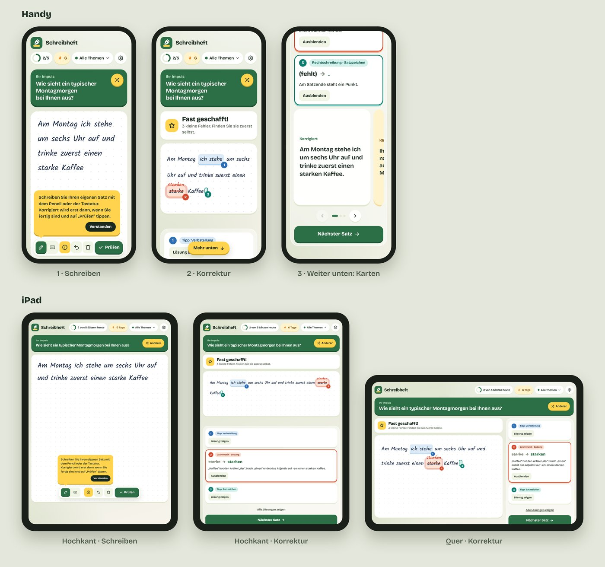

Wie alles anfing
Als ich mich auf telc C1 vorbereitet habe, ist mir bei mir selbst und bei anderen im Kurs dasselbe aufgefallen: Schreiben war der schwierigste Teil, obwohl wir alle schon gut Deutsch sprechen und verstehen konnten. Jede und jeder hatte eigene Strategien dafür entwickelt.
Ich habe meinen eigenen Workaround gefunden. Ich wollte von Hand schreiben, aber ein Heft aus Papier zeigt mir nicht, was falsch ist, so wie die Autokorrektur am Computer. Also habe ich auf dem iPad mit dem Apple Pencil geschrieben, die Handschrift von iOS in Text umwandeln lassen und dann geprüft, ob alles richtig war.
Schreibheft macht aus diesem Workaround eine App. Zusammen mit einem KI-Assistenten wollte ich schnell herausfinden, ob die Idee funktioniert: zuerst für mich selbst, aber von Anfang an mit Blick auf andere Lernende.
Das Problem
Viele Deutschlernende auf B2- und C1-Niveau sprechen fließend, tun sich aber schwer damit, korrekt zu schreiben.
- Prüfungen werden auf Papier geschrieben. Zertifikate wie telc legt man mit einem Antwortbogen aus Papier ab. In telc Deutsch C1 Hochschule zum Beispiel haben die Teilnehmenden 70 Minuten Zeit für einen Text von etwa 350 Wörtern. Eine Rechtschreibprüfung gibt es dabei nicht.
- Alltags-Tools verstecken Fehler. Autokorrektur und Rechtschreibprüfung verbessern Fehler still und leise. Lernende sehen nie, was sie falsch gemacht haben, und dieselben Fehler tauchen in der Prüfung wieder auf.
- Feedback ist schwer zu bekommen. Eine Lehrkraft, die Texte korrigiert, ist teuer, und allgemeine Grammatik-Tools schreiben Sätze um, statt sie zu erklären.
Warum Handschrift
Studien deuten darauf hin, dass Schreiben von Hand das Gehirn stärker beansprucht als Tippen, und das kann beim Lernen helfen.
-
Mehr Vernetzung im Gehirn. In einer EEG-Studie von 2024 haben Van der Weel und Van der Meer 36 Studierende beobachtet, die Wörter mit einem digitalen Stift geschrieben und auf einer Tastatur getippt haben. Beim Schreiben von Hand waren Gehirnregionen, die mit Gedächtnis und Lernen zu tun haben, deutlich stärker miteinander vernetzt. Geschrieben wurde auf einem Touchscreen mit digitalem Stift, ganz ähnlich wie mit dem Apple Pencil auf dem iPad.
Hinweis: Die Studie hat Gehirnaktivität gemessen, keine Testergebnisse.
-
Schneller lernen in einer neuen Sprache. In einer Studie der Johns Hopkins University (Wiley & Rapp, Psychological Science, 2021) haben 42 Erwachsene das arabische Alphabet gelernt: durch Schreiben, Tippen oder Videos. Die Gruppe, die von Hand geschrieben hat, lernte schneller und war besser darin, neue Wörter zu schreiben, zu buchstabieren und zu lesen. Die Autor:innen raten erwachsenen Sprachlernenden, das Lernen mit Apps um „gute, altmodische Papierarbeit“ zu ergänzen.
Hinweis: Die Studie hat das Lernen von Buchstaben untersucht, nicht das Schreiben ganzer Sätze.
Zusammen stützen die beiden Studien die Idee hinter Schreibheft: von Hand schreiben üben und die eigenen Fehler sehen.
Die Idee
Schreibheft ist ein Übungsheft, in dem Lernende ihren eigenen Satz schreiben, von Hand mit dem Apple Pencil oder über die Tastatur. Korrigiert wird erst, wenn sie auf „Prüfen“ tippen. Die Autokorrektur ist ausgeschaltet, und die Handschrifterkennung hat die Anweisung, jeden Fehler stehen zu lassen, statt zu raten, was gemeint war.
Wichtige Design-Entscheidungen
Erst nachdenken, dann aufdecken.
Fehler werden zuerst nur markiert. Zu jedem gibt es vor der Lösung einen kleinen Hinweis („Tipp: Endung“), und die Lösungen öffnen Lernende einzeln.
Feedback wie von einer Lehrkraft.
Die Korrektur steht in roter Handschrift direkt über den eigenen Wörtern, mit einer kurzen Erklärung in einfacher Sprache und ohne Grammatik-Fachbegriffe.
Vier klare Fehlerarten.
Rechtschreibung, Grammatik, Wortstellung und Ausdruck. Jede hat ihre eigene Farbe, so werden Muster sichtbar.
Karten zum Wischen.
Der korrigierte Satz, eine natürlichere Version, eine formellere Version für Briefe und Anfragen und Tipps für das nächste Mal.
Leichte Motivation.
Ein Tagesziel, eine Serie und 70 Schreibimpulse in 7 Themen, darunter formelle Briefe, wie man sie für Prüfungen übt.
Zuerst fürs iPad gebaut.
Eine schwebende Werkzeugleiste, Hinweise, die auf den erklärten Button zeigen, und Layouts, die sich an Handy, Tablet und Desktop anpassen.
Vorgehen
Ich habe Schreibheft zusammen mit einem KI-Assistenten (Claude) gebaut. So kam ich an einem Tag von der Idee zu einem funktionierenden, testbaren Produkt.
- Den riskantesten Teil zuerst testen. Ein schneller Prototyp hat eine Frage beantwortet: Kann die Handschrifterkennung die Fehler von Lernenden stehen lassen, statt sie zu verbessern?
- Kurze Feedback-Schleifen. Ich habe die App auf meinem iPad benutzt, gemerkt, was sich falsch anfühlte (doppelte Markierungen, unklare Erklärungen, Hinweise an der falschen Stelle), und es sofort verbessert.
- Drei visuelle Richtungen. Ich habe Mockups von drei Varianten verglichen: ruhig und minimalistisch, freundlich und lebendig, und eine Mischung. Gewählt habe ich die Mischung: lebendige Gestaltung mit einer ruhigen, konzentrierten Schreibfläche und einer schwebenden Werkzeugleiste.
- Auf jedem Gerät prüfen. Echte Screenshots auf Handy und iPad, hochkant und quer, haben Layout-Probleme früh gezeigt.

Durch die Arbeit mit KI konnte ich meine Zeit in Design- und Lernentscheidungen stecken, während der Assistent die Umsetzung übernommen hat.
Tools und nächste Schritte
Tools
Claude (KI-Assistent) · Web-App mit Apple-Pencil-Unterstützung · KI-basiertes Lesen und Korrigieren der Handschrift
Nächste Schritte
Tests mit echten Lernenden, die sich auf telc vorbereiten, und ein Backend, damit die App ohne Claude-Konto funktioniert.
Quellen
- telc Deutsch C1 Hochschule: Tipps zur Prüfungsvorbereitung (telc)
- Handwriting but not typewriting leads to widespread brain connectivity (Van der Weel & Van der Meer, Frontiers in Psychology, 2024, auf Englisch), Zusammenfassung bei PsyPost
- Handwriting beats typing and watching videos for learning to read (Johns Hopkins University, zu Wiley & Rapp, Psychological Science, 2021, auf Englisch)